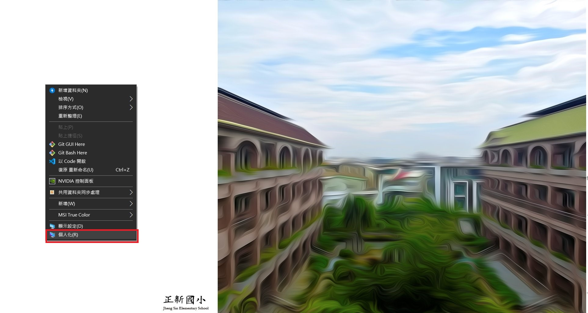
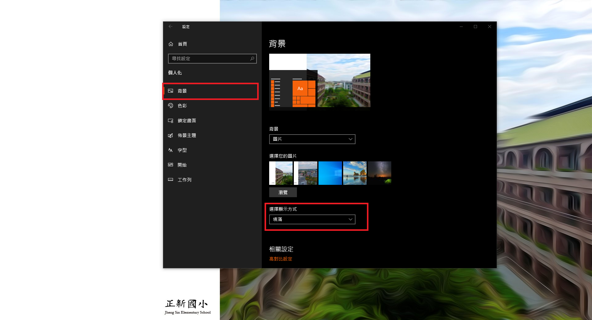
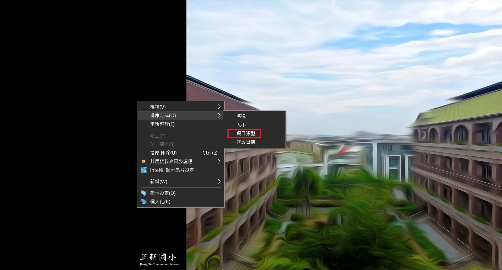

以下說明以Windows 10 為例
關於最佳解析度
由於圖片解析度為1920px*1080px且為16:9，若螢幕與此不符合圖片可能會有裁切或留白，可以使用以下方法讓圖片占滿桌面背景(但是可能些許造成圖片變形)
點選滑鼠右鍵→個人化設定→左側背景→填滿

為何桌面板左邊要留白?
由於電腦桌面常有許多捷徑和資料夾，因此留白是為了放置捷徑和資料夾用途。
如何讓畫面看起來整潔?
個人方式以下僅供參考，對著桌面點選滑鼠右鍵→選擇排序方式→項目類型
如下圖
此時桌面的物品將會依照相同類型的方式排列，例如都是Excel檔的檔案將會相鄰、捷徑與捷徑相鄰、資料夾與資料夾相鄰。也可依大小、名稱、修改日期排列，請自行斟酌。